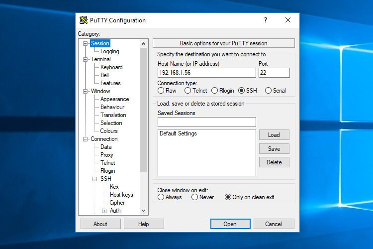
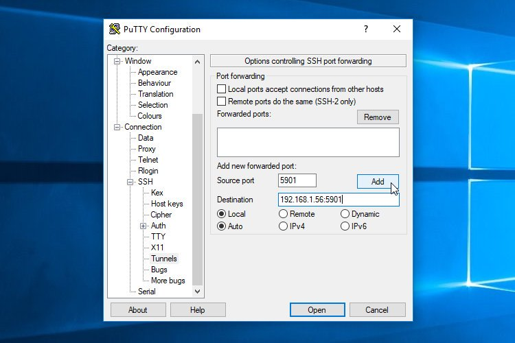
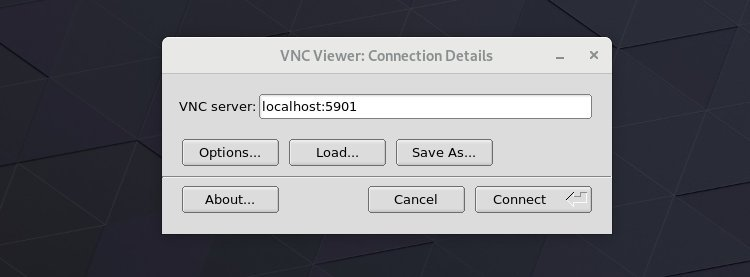
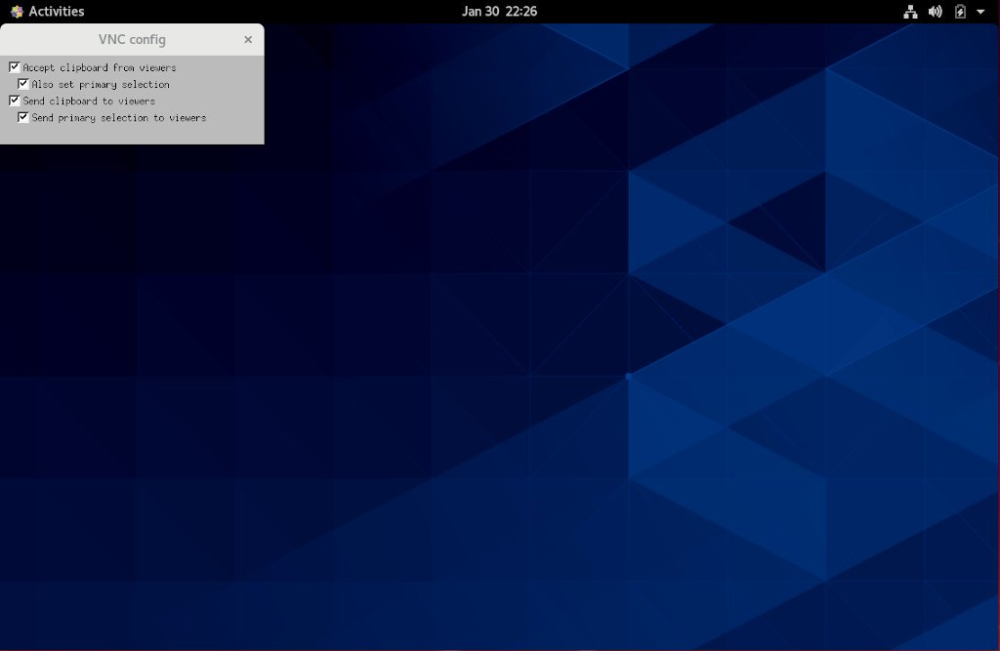

在 CentOS 8 上安装和配置 VNC
VNC（Virtual Network Computing） 是一个图形桌面共享系统，可让您使用键盘和鼠标远程控制另一台计算机。
本文介绍了在 CentOS 8 上安装和配置 VNC 服务器的步骤。我们还将向您展示如何通过 SSH 隧道安全地连接到 VNC 服务器。
先决条件
要遵循本指南，您需要以具有 sudo 特权的用户身份在远程 CentOS 计算机上登录。
安装桌面环境
通常，服务器没有安装桌面环境。如果要连接的计算机没有 GUI 桌面环境，则必须先安装 GUI 桌面环境。如果已经安装了 GUI 桌面环境，可以跳过此步骤。
运行以下命令在远程计算机上安装 Gnome(CentOS 8 中的默认桌面环境)：
sudo dnf groupinstall "Server with GUI"
根据您的系统，下载和安装 Gnome 软件包以及相关性可能会花费一些时间。
安装 VNC 服务器
TigerVNC 是一个正在积极维护的高性能开源 VNC 服务器程序。在默认的 CentOS 存储库中可以找到它，进行安装：
sudo dnf install tigervnc-server
安装 VNC 服务器后，运行 vncserver 命令以创建初始配置并设置密码。 sudo 运行以下命令时请勿使用：
vncserver
系统将提示您输入并确认密码，以及是否将其设置为只读密码。如果选择设置仅只读密码，则用户将无法使用鼠标和键盘与 VNC 实例进行交互。
You will require a password to access your desktops.
Password:
Verify:
Would you like to enter a view-only password (y/n)? n
/usr/bin/xauth: file /home/buzheng/.Xauthority does not exist
New 'server2.buzheng.org:1 (buzheng)' desktop at :1 on machine server2.buzheng.org
Starting applications specified in /etc/X11/Xvnc-session
Log file is /home/buzheng/.vnc/server2.buzheng.org:1.log
第一次运行 vncserver 命令时，它将创建密码文件并将其存储在 ~/.vnc 目录中。
注意上面输出中主机名后面的 :1 。这指示正在运行 VNC 服务器的端口号。在我们的例子中，服务器在 TCP 端口 5901 (5900 + 1) 上运行。如果创建第二个实例，它将在下一个空闲端口上运行，即 :2 ，表示服务器在端口 5902 (5900 + 2) 上运行。
要记住的重要一点是，在使用 VNC 服务器时， :X 对应的端口是指 5900+X 。
在继续下一步之前，首先使用 vncserver 命令带上 -kill 选项的和服务器号作为参数停止 VNC 实例。在我们的例子中，服务器在端口 5901(:1) 中运行，因此要停止它，请运行：
vncserver -kill :1
Killing Xvnc process ID 19681
配置 VNC 服务器
现在，在远程 CentOS 计算机上都安装了 Gnome 和 TigerVNC ，下一步是配置 TigerVNC 以使用 Gnome 。创建新桌面时， VNC 服务器使用文件 ~/.vnc/xstartup 启动应用程序。打开文件：
vim ~/.vnc/xstartup
并如下编辑文件 ~/.vnc/xstartup：
#!/bin/sh
[ -x /etc/vnc/xstartup ] && exec /etc/vnc/xstartup
[ -r $HOME/.Xresources ] && xrdb $HOME/.Xresources
vncconfig -iconic &
dbus-launch --exit-with-session gnome-session &
保存并关闭文件。每当您启动或重新启动 TigerVNC 服务器时，以上脚本都会自动执行。
如果要将其他选项传递给 VNC 服务器，请打开编辑 ~/.vnc/config 文件，每个选项占一行。文件中列出了最常用的选项。取消注释并根据自己的喜好进行修改。
这是一个例子：
# securitytypes=vncauth,tlsvnc
# desktop=sandbox
geometry=1920x1080
# localhost
# alwaysshared
创建一个 Systemd 单位文件
单位文件使您可以轻松启动，停止和重新启动服务。通常，存储用户的单元文件的最佳位置是 ~/.config/systemd/user 。创建目录：
mkdir -p ~/.config/systemd/user
复制默认的 vncserver 单元文件：
cp /usr/lib/systemd/user/vncserver@.service ~/.config/systemd/user/
通知 systemd 加载新的用户单元文件：
systemctl --user daemon-reload
启动 VNC 服务并在启动时启用它：
systemctl --user enable vncserver@:1.service --now
@: 后面的数字 1 定义 VNC 服务将在其上侦听的端口。我们使用的是 1 ，这意味着 VNC 服务器将侦听 5901 端口。
启用自动运行，以便用户服务在启动时启动并在用户未登录时保持运行：
loginctl enable-linger
验证服务是否成功启动：
systemctl --user status vncserver@:1.service
● vncserver@:1.service - Remote desktop service (VNC)
Loaded: loaded (/home/linuxize/.config/systemd/user/vncserver@.service; enabled; vendor preset: enabled)
Active: active (running) since Thu 2020-01-30 22:14:08 UTC; 2s ago
Process: 20813 ExecStart=/usr/bin/vncserver :1 (code=exited, status=0/SUCCESS)
Process: 20807 ExecStartPre=/bin/sh -c /usr/bin/vncserver -kill :1 > /dev/null 2>&1 || : (code=exited, status=0/SUCCESS)
CGroup: /user.slice/user-1000.slice/user@1000.service/vncserver.slice/vncserver@:1.service
...
连接到 VNC 服务器
VNC 不是加密协议，可能会受到数据包嗅探的影响。推荐的方法是创建 SSH 隧道，以安全地将流量从本地计算机上的 5901 端口转发到远程服务器的同一端口上。
在 Linux 和 macOS 上设置 SSH 隧道
如果您在计算机上运行 Linux ， macOS 或任何其他基于 Unix 的操作系统，则可以使用以下 ssh 命令轻松创建隧道：
ssh -L 5901:127.0.0.1:5901 -N -f -l username remote_server_ip
系统将提示您输入用户密码。
不要忘了更换
username为您自己的用户，把remote_server_ip更改为您自己的服务器的 IP 地址。
在 Windows 上设置 SSH 隧道
Windows 用户可以使用 PuTTY 设置 SSH 隧道。
打开 Putty ，然后在 Host name or IP address 字段中输入您的服务器 IP 地址。

在 Connection 菜单下，展开 SSH 并选择 Tunnels 。在 Source Port 字段中输入 VNC 服务器端口 (5901)，在 Destination 字段中输入 server_ip_address:5901，然后点击如下图所示的 Add 按钮：

返回 Session 页面保存设置，然后您无需每次都输入它们。要登录到远程服务器，请选择保存的会话，然后单击 Open 按钮。
使用 Vncviewer 连接
要连接到远程服务器，请打开 VNC 查看器并输入 localhost:5901 。
您可以使用任何 VNC 客户端，例如 TigerVNC ， TightVNC ， RealVNC ， UltraVNC Vinagre 和用于 Google Chrome 的 VNC 客户端。
我们要使用的是 TigerVNC ：

在出现提示时输入密码，然后您会看到默认的 Gnome 桌面。它看起来应该像这样：

就是这样！现在，您可以使用键盘和鼠标从本地计算机开始在远程桌面上工作。
结论
我们已经向您展示了如何设置 VNC 服务器并连接到远程 CentOS 8 计算机。
要为多个用户启动显示，请重复相同的步骤。创建初始配置，使用 vncserver 命令设置密码，并使用其他端口创建新的服务文件。